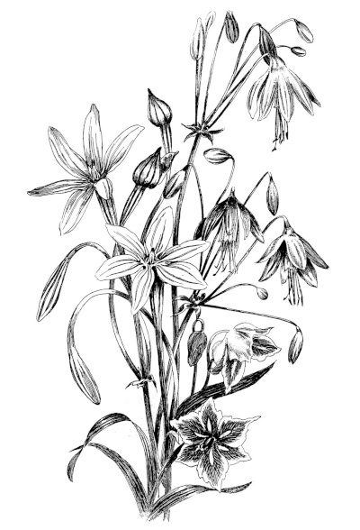

Hi there.You are here by accident, but maybe it is not too bad.
There is nothing useful on this page, but life is not only about useful things. We wake up, run around, trying to be in time, always on the ball, alert, ready to pounce. Maybe today is a good day to do something different? |

|
Like, finally realize that today is the only time we really have. All those days before today are gone and no longer there, and tomorrow - are you sure about being there tomorrow? But then, when did you last say to your friends that you love them? When did you last notice how beautiful is that flower on the side of the road? What was that thing that you really wanted to do but never had the time? Today is the day. Forgive yourself for everything you did not do or did wrong, pat yourself on the back for all the good things you have achieved. Then take a break to think what will you do today if that is the only time you have?
Well, we all want to be happy and we have our own ideas of what happiness is. I want you to be happy now. I want you to smile. It will make the world lighter, it will really make it a better place to be. Let yourself become a tiny torch and shine away, igniting more and more souls.
If you leave this page in a better mood, I am delighted because I achieved something, my life is not wasted, it has meaning now.
|
|